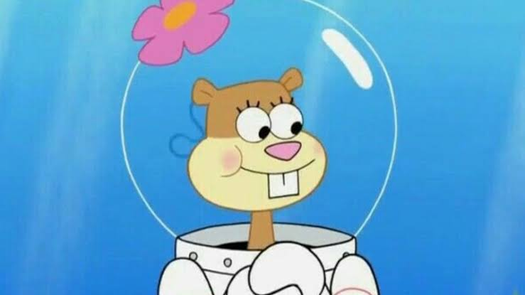
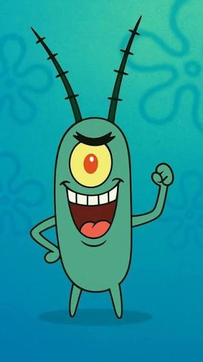

Bob Esponja
Cocinero en el Crustáceo Cascarudo
Una esponja marina alegre, optimista y extremadamente trabajadora que vive en una piña con su caracol Gary.

Explora los personajes más icónicos de la serie animada "Bob Esponja Pantalones Cuadrados".
Cocinero en el Crustáceo Cascarudo
Una esponja marina alegre, optimista y extremadamente trabajadora que vive en una piña con su caracol Gary.

Mejor Amigo
Una estrella de mar perezosa pero leal. Es el mejor amigo de Bob Esponja y vive debajo de una roca.

Cajero y Clarinetista
Un pulpo amargado que sueña con ser un artista famoso. Odia su trabajo y le molesta su vecindario.

Dueño del Crustáceo Cascarudo
Un cangrejo extremadamente tacaño obsesionado con el dinero y protector de la fórmula secreta.

Científica e Inventora
Una ardilla de Texas experta en karate que vive bajo el agua usando un traje de buzo especial.

Propietario del Balde de Carnada
El rival de Don Cangrejo. Pasa todo su tiempo intentando robar la fórmula secreta de la Cangreburguer.

Mascota de Bob Esponja
Un caracol marino inteligente que se comporta como un gato y suele dar sabios consejos a Bob.

Instructora de Navegación
Un pez erizo que dirige la escuela de canotaje y sufre constantemente por la conducción de Bob Esponja.